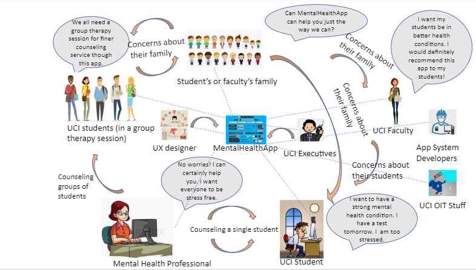

Requirement Elicitation and Stakeholder Model of Ant-Mental-Health App
Requirement Elicitation
Have you ever used any mental health applications?
No prior experience with mental health applications
How do you feel about meeting with a specialist physically for mental health assistance?
An important option to have and make available.
What steps would you take to make an appointment with a specialist?
Scroll through the list of doctors with their profile show on the left and all of their
available times that week on the right.
Can filter through specialization or date
Click on available date and time to schedule the appointment
Similar to ZocDoc
includes doctor profile, contact info, ratings, reviews, availability
A map that shows users the nearest places to get help if needed
What kind of appointments will users be able to schedule?
Physical/in-person appointments, online individual appointments, online group
therapy appointments
In what kinds of situations are you most likely to be stressed or anxious?
During times with lots of assignments due or during midterms + finals periods.
Periods of financial stress also cause stress.
What features within the app can suggest activities to relieve stress?
Things like breathing exercises, exercise suggestions, stress relief activities, books, or small games (from outside/3rd party sources)
What features within the app should avoid in order to get relief from mental distress?
Language, especially in advice or suggestions, should not be vague
How do you feel about taking assessments to see how you are doing mentally?
Assessments can be helpful in understanding what students may currently be stressed about or suffering from
How will mental health assessments be performed?
Administered online, with results being manually reviewed by a mental health professional. No automated mental health assessments will be available
What would be the most convenient way for users to contact someone for mental health assistance?
Push of a button, messaging, or call
What kind of information would you want a specialist to know about you?
Basic demographic information (ex: name, age, gender) mental health record, and journal. If asked specific questions, user can always decline to share information
How much information will administrators/professionals be able to see regarding a patient’s mental health history?
Anything that exists on a student's health records, including current diagnoses and prescriptions. The mental health journal featured on this app should also be available for professionals and administrators to view
How do you feel about having the function that keeps a record of mental health like a journal?
Can help both user and a mental health professional track a student's moods
What kind of physical/emotional features do you see a user wanting to track?
Tracked daily (or as often as a user wants to fill in their journal): mood, stress level, work level, financial stress level, sleep quantity/quality
How do you feel about being in group chats with others who are also experiencing mental health problems?
It is a good idea that gives users an opportunity to share their feelings and connect/support/get support from others
How do you feel about being able to post discussion boards?
Discussion boards should be places where students can ask for and offer advice. Anonymity is optional, posts are sorted by (preset) topics, and no system for ranking (up/down voting) will exist. Replies to posts are allowed.
In what ways would you like our application to use your personal information?
Only medical professionals and administrators can view medical record
Is the system available to students no matter where they live?
Available to both on campus and off campus students
Does this app require pre-existing health insurance coverage?
Since health insurance is required for all UCI students, it is required. Health insurance does not have to be the UCI-specific insurance plan
Why should user anonymity be/not be a concern?
Students may not feel comfortable sharing their thoughts in places like public discussion forums, so anonymity may make it easier for them to consider asking for help or advice. The same is true for one-on-one and group counseling sessions, where their name/face may remain anonymous, but the relevant health professional will still have access to their health records in order to better help them. Anonymity in all these situations will be optional, with the student ultimately allowed to decide if they want to turn the option on or off
How often do you see users interacting with and using the system and its services?
Hopefully daily, once a day for journaling purposes. For things such as mental health check-ups and appointments, a regular schedule ranging from weekly to bi-monthly as the student sees fit is ideal
What kind of notifications and pop-ups will the system provide to users?
To-do lost notifications (customized by user and/or doctors), stress relief advice or suggestions, reminders concerning scheduled or to-be-scheduled appointments
How much control will users have over the types of notifications they receive?
Users can turn off or ignore notifications and input their schedule so the system knows "free times" for when notifications are ideal
How will preset reminders, advice, and recommendations be created?
They will be uniquely tailored to the student based on any pre-existing mental health conditions and the results of a general assessment (mostly focusing on personal interest areas)
How many levels of admin access do you imagine there being?
System administrators will help manage system and have access to all information from students and app staff. Mental health professionals and counselors work for the app and UCI counseling division and have access to all students mental health records and journals
How many steps would exist between a user and a professional therapist in the case of emergency situations?
There should be an option to instantly speak to a counselor in cases of emergency. If the counselor deems the situation critical enough, they can connect the student to a more especially trained professional.
Who will have access to the system and how will they sign up?
All UCI students, staff, and faculty will have access. They will sign up using their UCInet ID and password.
How this app can have features like plans, reminders, recommendations, etc?
There will be a calendar section that will include user’s plans and reminders of events and goals
Recommendation
How the app can contain features to protect the privacy issues of the users?
Require UCInetID to login
Only allow medical professionals and administrators to access student information
Users can be anonymous by choice
What action should the system do if the messaging feature fails?
All messaging services should be put on hold until system tech support can address the issue. Support should be as immediate as possible.
Who will learn about the results of someone using features of the app improperly?
Features like the public discussion board are to be moderated both automatically and manually. Flagged keywords or phrases will be brought automatically to system administrator attention, and they will also have the option to manually sort through posts. Journals are also viewable by both administrators and professionals
How do users connect with therapists and counselors?
Through online messaging (in text, audio, and audio+video form) or by scheduling an in-person appointment
What kinds of mental issues can users seek to resolve by using it?
The system will mainly resolve anxiety, stress, and depression.
What appears on the user’s feed?
Upcoming events and advice videos related to a user's personal interests
How should the user’s feed be constructed?
Artifacts on the feed are determined by a user's personal interests as determined by an initial personal assessment and matched up by topic (every feed post will have a topic, as determined by the UCI Wellness Center, who is in charge of posting)
What can users do with the messaging feature?
Connect with therapists and counselors for advice as well as join in group therapy sessions
Is there any other way for users to interact with the community?
Public discussion forum with posts sorted by topic and chronologically, featuring comments.
Online group therapy/support sessions during scheduled times, of max 9 people, Similar to Alcoholics Anonymous in structure.
Users can like and bookmark posts in their feed.
How can users and mental health therapists communicate with each other other than private messages?
Audio and audio+video messaging, group therapy sessions, or scheduled in-person appointments
What kind of mental health information can users get from it?
UCI organization events concerning mental health
General automated advice to better their mental health condition
Professional mental health treatments from medical professionals
What kind of user data is needed to learn user’s behavior?
How do users know more about the therapists?
When do users need to have periodical mental health assessments?
How is the health assessment constructed?
Stakeholder Model - Rich Picture

Textual Stakeholder Analysis
UCI Executives
Priority: High
The executives receive the highest priority and are directly in control of the entire project, making decisions about software requirements because they are the main funders of AnteaterMentalHealth.
Relation to other stakeholders:
Giving related requirements for the whole project, such as estimated project budget, necessary functionality, and phase deadlines.
Working with App System Developers to discuss about how the application can be implemented and what features it will have.
Collecting requirements from UCI Students & Faculty since they are the major users of the app.
Area of expertise/knowledge level of expertise in that area:
Expert in college operation and finance.
Know little about professional mental health knowledge.
Primary concerns (as related to system):
The executives have concerns for the overall cost (software engineering and operation/maintenance) of the project.
The executives are concerned with user’s satisfaction and engagement.
UCI OIT Staff
Priority: Low
OIT staff have lower priority since they do not directly participate in the software engineering process and are only responsible for users and technical support issues when the application is put in use.
Relation to other stakeholders:
Working together with App System Developers to develop the application because OIT staff will be responsible for software logistics and maintenance.
Helping UCI Students & Faculty to use the app after AnteaterMentalHealth is released.
Area of expertise/knowledge level of expertise in that area:
Know techniques in website and application maintenance.
Good at network problem shooting.
Primary concerns (as related to system):
OIT staff want to know the estimated number of active users since they
will be managing the server and providing support for users.
App System Developers
Priority: Medium
Though app system developers are not using the system directly, they create and may update features of the system on a regular basis.
Relation to other stakeholders:
Working with UCI OIT Staff to develop application with focus on UCINetID, server operation, and cyber security.
Implementing requirements from both UCI Executives and Mental Health Professionals.
Area of expertise/knowledge level of expertise in that area:
Expert in software engineering.
Knowledgeable in software architecture, data structure, and computer network.
Primary concerns (as related to system):
App developers have to ensure the application meet client’s (UCI) requirements.
App developers have to ensure the application is delivered on time.
App developers have to do a lot of testing before the application release.
UCI Students
Priority: High
UCI students make up a large majority of the main user base for this system.
Relation to other stakeholders:
Giving demands, feedback, and advice about AnteaterMentalHealth to UCI Executives.
They will receive assistance from mental health professionals
Area of expertise/knowledge level of expertise in that area:
Most only have basic mental health knowledge, at most.
Primary concerns (as related to system):
Students are doubtful about this unconventional style of mental health counseling.
Students are worried about the online community environment because it is semi-public, so some students can potentially post harassment or malicious information.
Students are concerned with the cost of the service and how to correctly apply their health insurance because mental health services can be very costly without insurance.
UCI Faculty
Priority: High
Like UC students, UC faculty have high priority regarding the use of the system as they will also be using the system to get relief from their mental distress.
Relation to other stakeholders:
They will receive therapy from mental health professionals.
They will encourage students to use the app when feeling mentally overwhelmed.
Area of expertise/knowledge level of expertise in that area:
Have a decent understanding of mental health.
Know student’s needs well.
Primary concerns (as related to system):
UCI Faculty has the responsibility to promote and recommend AnteaterMentalHealth, so they are concerned with how this app can be helpful for both themselves and UCI students.
Mental Health Professionals
Priority: High
Mental health professionals are considered high priority stakeholders of the system. They are the people who will provide counseling or therapy to students and faculty in need through the system.
Relation to other stakeholders:
Providing mental help for major users such as UCI students and faculty.
Coordinating with app developers by giving guidance and instruction on certain features and what kind of steps or feedback system should include for those features.
Area of expertise/knowledge level of expertise in that area:
Professional in mental health related topics. They will be giving principles and suggestions for the mental health environment of the application.
Expert in mental health counseling, so users will have real counselors to meditate their mental issues.
Primary concerns (as related to system):
Mental health professionals have concerns about the effectiveness of online counseling because they are determinant in designing counseling process.
Mental health professionals want to know what kind of technology can be applied, such as online chat and video sharing. They can give instructions on how to best structure the counseling environment depending on the different technologies used in the application.
Student's Family
Priority: High
Student's family will have no direct interaction with the app, but are still concerned with the general success and effectiveness of the system.
Relation to other stakeholders:
They will be communicating with their family members who are UCI students/faculty and primary stakeholders of the system.
Area of expertise/knowledge level of expertise in that area:
Most only have about basic mental health knowledge, at most.
Primary concerns (as related to system):
Because most students' parents are unfamiliar with online counseling and its potential impact on their children, they want to know if this is a legitimate way to have mental health counseling.
UCI Students (in a group therapy session)
Priority: High
In a group therapy session, students in a group will get immediate help on their mental health issues with companions and mental health professionals.
Relation to other stakeholders:
They will communicate with mental health professionals and other UC students in their therapy sessions.
Area of expertise/knowledge level of expertise in that area:
Students have sufficient knowledge about their expectations from the system, such as how the system can best benefit them.
Primary concerns (as related to system):
Students in a group therapy session might expect better counseling services and results than from an individual session, since there will be more chances to collaborate and share experiences.
UX Designers
Priority: High
A UX designer’s priority is lower than the original software developer’s, as UXs designer need to create a pleasant and intuitive user experience for current and future users of the app.
Relation to other stakeholders:
They work with software developers of the app directly. UX designers provide potential user flows of the current system to the app developers, so that the design of the system addresses all steps in certain processes and becomes practical and intuitive to use.
Area of expertise/knowledge level of expertise in that area:
UX designers have sufficient knowledge regarding the intended audience, elicitation documents and UI/UX, which are useful skills in creating desirable user interfaces.
Primary concerns (as related to system):
UX/UI designers are primarily concerned with the usability of the system to ensure users get the best experience while using it, including maintaining standard design guidelines for the user interface.